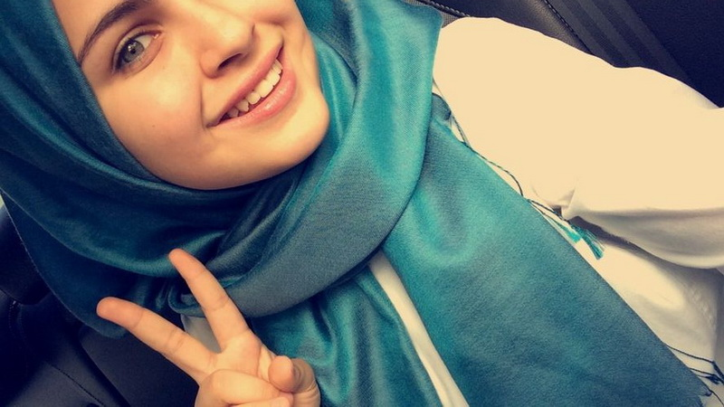

Doa agar Orang yang Kita Cintai Merindukan Kita
Cinta merupakan anugerah dari Allah kepada manusia. Dengan cinta, seseorang bisa merasakan kebahagiaan dalam hidup. Jika mencintai seseorang hendaklah semata-mata hanya karena Allah. Bisa mencintai dan dicintai merupakan harapan tiap orang. Namun, terkadang apa yang dicintai belum tentu mencintai balik sesuai yang diharapkan. Karena itu, perlu ikhtiar dengan berdoa memohon kepada Allah yang membolak-balikkan hati manusia agar orang yang kita cintai bisa mencintai kita.
Bisa mencintai dan dicintai merupakan harapan tiap orang. Namun, terkadang apa yang dicintai belum tentu mencintai balik sesuai yang diharapkan. Karena itu, perlu ikhtiar dengan berdoa memohon kepada Allah yang membolak-balikkan hati manusia agar orang yang kita cintai bisa mencintai kita.
Berikut doa agar orang yang kita cintai merindukan kita:
أَحَبَّكَ الَّذِيْ أَحْبَبْتَنِي لَهُ
Ahabbakalladziii ahbabtanii lahu
“Semoga Allah mencintai kamu yang cinta kepadaku karenaNya.” Doa tersebut merujuk pada hadis Nabi yang diriwayatkan oleh Abu Daud sebagaiman dikutip inews.id dari umma.id. Doa tersebut bisa dipanjatkan oleh orang yang merindukan cinta Allah dalam mencintai makhluknya.
Doa agar orang yang kita cintai merindukan kita lainnya:
“Allahumma inni as aluka, bihaibati adhamatika, wabisatwati jalaalika antaj’ala mahabatii fii qalbi wa’an tulqil mawaddata wamahabata fii qalbihi wa aththofhu, alayya bi fadhlika yaa kariim.”
Artinya: “Ya Allah, sesungguhnya aku meminta kepada-Mu, berkah wibawa keagungan-Mu dan amukan keluhuran-Mu, agar engkau jadikan kecintaan di dalam hati (sebut namanya bin nama ayahnya). Dan resapkanlah kecintaan dan kasih sayang terhadapku di dalam hatinya. Dan cenderungkan ia padaku lewat anugrah-Mu. Wahai dzat yang maha mulia.

Doa untuk meluluhkan hati seseorang
اللَّهُمَّ إِنَّكَ أَنْتَ الْعَزِيْزُ الْكَبِيْرُ وَأَنَا عَبْدُكَ الضَّعِيْفُ الذَّلِيْلُ الَّذِيْ لَا حَوْلَ وَلَا قُوَّةَ إِلَّا بِكَ، اللَّهُمَّ سَخِّرْ لِيْ فُلَاناً كَمَا سَخَّرْتَ فِرْعَوْنَ لِمُوْسَى وَلَيِّنْ لِيْ قَلْبَهُ كَمَا لَيَّنْتَ الْحَدِيْدَ لِدَاوُدَ فَإِنَّهُ لَا يَنْطِقُ إِلَّا بِإِذْنِكَ نَاصِيَتُهُ فِيْ قَبْضَتِكَ وَقَلْبُهُ فِيْ يَدِكَ جَلَّ ثَناَءُ وَجْهِكَ يَا أَرْحَمَ الرَّاحِمِيْنَ
Allahumma Antal 'Aziizul kabiir, wa ana 'abdukadh dho'iifudz dzaliil Alladzii laa haula walaa quwwata illa bika. Allahuma sakhkhir lii fulaan (sebut nama orang yg di maksud) kama sakhkhorta Fir'aun li Musa, wa layyin lii qolbahu kamaa layyantal hadiid li Dawud. Fainnahu laa yantiqu illa bi idznika, naa shiyatuhu fii qobdlotika, wa qolbuhuu fii yadika, Jalla tsanaa u wajhika yaa arhamar roohimiin.Artinya: Ya Allah bahwasanya Engkaulah yang Maha Perkasa lagi Maha Besar. Dan sesungguhnya aku ini adalah hamba-Mu yang hina lagi lemah. Ya Allah mudahkanlah bagiku urusanku, sebagaimana Engkau mudahkan bagi urusan Fir'aun kepada Musa dan lunak hati manusia bagiku sebagaimana Engkau lunakkan besi bagi Nabi Daud. Engkaulah adalah sebaik-baik pemimpin dan sebaik-baik penolong, wahai Tuhan Yang Maha Hidup, Wahai Tuhan Yang Maha Penguasa, Wahai Tuhan Yang Punya Keagungan dan Kemuliaan, perkenanlah ya Allah.
Cinta yang diberikan dan diucapkan kepada orang yang dicintai itu hendaklah bukan karena dorongan hawa nafsu semata. Sebab, nafsu hanya mendorong kepada keburukan.
Dalam Alquran, Allah SWT
وَمَآ اُبَرِّئُ نَفْسِيْۚ اِنَّ النَّفْسَ لَاَمَّارَةٌ ۢ بِالسُّوْۤءِ اِلَّا مَا رَحِمَ رَبِّيْۗ اِنَّ رَبِّيْ غَفُوْرٌ رَّحِيْمٌ - ٥٣
Dan aku tidak (menyatakan) diriku bebas (dari kesalahan), karena sesungguhnya nafsu itu selalu mendorong kepada kejahatan, kecuali (nafsu) yang diberi rahmat oleh Tuhanku. Sesungguhnya Tuhanku Maha Pengampun, Maha Penyayang.
Dalam ayat ini dijelaskan bahwa Yusuf sebagai manusia mengakui bahwa setiap nafsu cenderung dan mudah disuruh untuk berbuat jahat kecuali jika diberi rahmat dan mendapat perlindungan dari Allah. Yusuf selamat dari godaan istri al-Aziz karena limpahan rahmat Allah dan perlindungan-Nya,
meskipun sebagai manusia Yusuf juga tertarik pada istri al-Aziz sebagaimana perempuan itu tertarik kepadanya seperti diterangkan pada ayat 24: Dan sungguh, perempuan itu telah berkehendak kepadanya (Yusuf). Dan Yusuf pun berkehendak kepadanya, sekiranya dia tidak melihat tanda (dari) Tuhannya. (Yusuf/12: 24).
Mencintai seseorang hanya karena Allah menandakan orang tersebut sudah merasakan manisnya iman. Hal ini sebagaimana disebutkan dalam hadits Nabi Muhammad SAW yang diriwayatkan dari Anas bin Malik radhiallahu anhu:
عَنْ أَنَسِ بْنِ مَالِكٍ رَضِيَ اللَّهُ عَنْهُ عَنْ النَّبِيِّ صَلَّى اللَّهُ عَلَيْهِ وَسَلَّمَ قَالَ ثَلَاثٌ مَنْ كُنَّ فِيهِ وَجَدَ حَلَاوَةَ الْإِيمَانِ مَنْ كَانَ اللَّهُ وَرَسُولُهُ أَحَبَّ إِلَيْهِ مِمَّا سِوَاهُمَا وَمَنْ أَحَبَّ عَبْدًا لَا يُحِبُّهُ إِلَّا لِلَّهِ عَزَّ وَجَلَّ وَمَنْ يَكْرَهُ أَنْ يَعُودَ فِي الْكُفْرِ بَعْدَ إِذْ أَنْقَذَهُ اللَّهُ مِنْهُ كَمَا يَكْرَهُ أَنْ يُلْقَى فِي النَّارِ
Dari Anas bin Malik dari Nabi shallallahu alaihi wasallam, beliau bersabda:
"Tiga (perkara) yang apabila ada pada diri seseorang, ia akan mendapatkan manisnya iman: Allah dan Rasul-Nya lebih dicintainya dari selain keduanya. Dan siapa yang bila mencintai seseorang, dia tidak mencintai orang itu kecuali karena Allah azza wajalla. Dan siapa yang benci kembali kepada kekufuran seperti dia benci bila dilempar ke neraka".
(HR. Bukhari) [No. 21 Fathul Bari] Shahih. Wallahu A'lam
Source